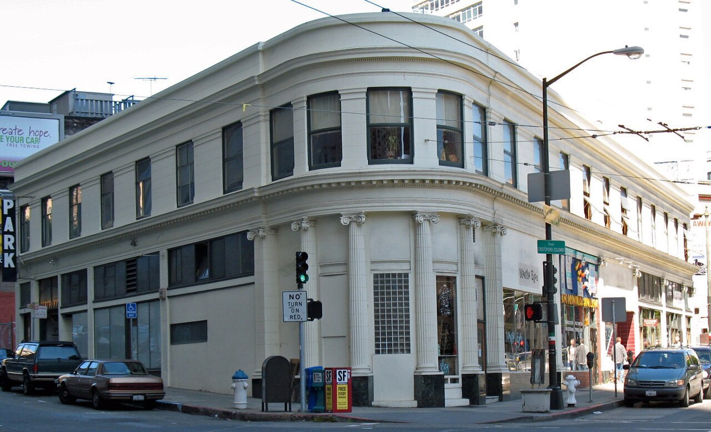
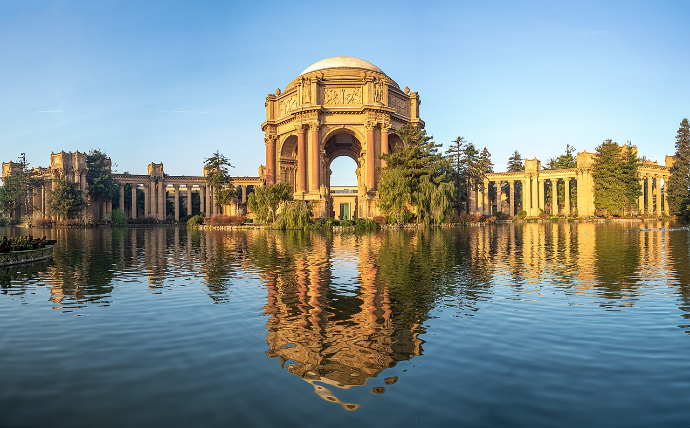
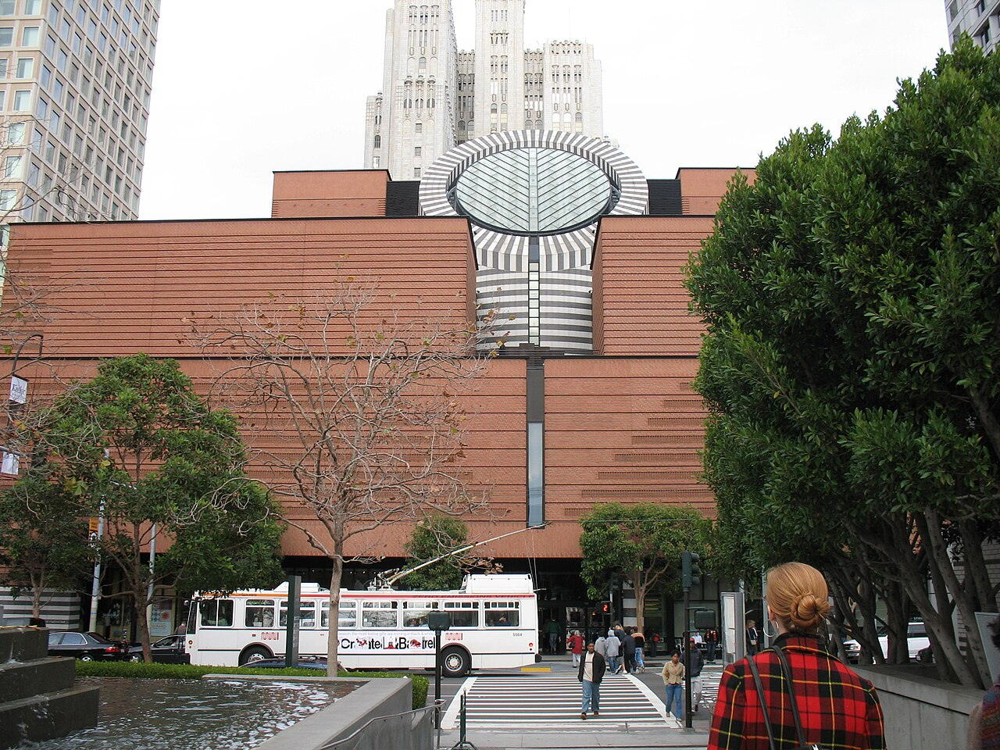

OTIUM OTIUM — практика нарочитого досуга. В античном смысле otium — не побег от работы, а время, когда внимание возвращается к памяти, пейзажу и мысли — без прикладного дедлайна.
Мы выстраиваем маршруты для неспешного присутствия, а не для чек-листа достопримечательностей: важно быть в месте, а не «потреблять» виды.
OTIUM — не туроператор. Это приглашение пройтись, остановиться и оставить маршрут незавершённым, если свет на фасаде заслуживает ещё минуты.
Историческая справка
Сан-Франциско — крупный город Калифорнии на тихоокеанском побережьи, узел золотой лихорадки и технологий.
Испанские и мексиканские корни, кабельные трамваи, мост «Золотые Ворота» и холмы определяют силуэт. Многоязычные кварталы, университеты и кремниевая долина сделали город символом инноваций.
Землетрясение 1906 года и контркультура 1960-х сформировали образ города; кризис и технологический бум залива превратили регион в центр инноваций. Сан-Франциско борется с жилищным кризисом, сохраняя мосты, туман и роль в истории прав ЛГБТ.
9550jfjfConcepcion Francisco Mosque Highway Tarlacfvf 05.JPG
9550jfjfConcepcion Francisco Mosque Highway Tarlacfvf 05.JPG
9550jfjfConcepcion Francisco Mosque Highway Tarlacfvf 05.JPG — landmark in San Francisco.
Alcatraz Island
Адрес: San Francisco Bay | Стиль: Cellhouse industrial architecture | Период: 1859 fort; federal penitentiary 1934–1963
Audio tours through cellblocks narrated by former guards and inmates; seabird nesting closes some paths seasonally.
Факты и детали
Only concessionaire boats may dock; tickets sell out weeks ahead in summer.
Night tours add lighthouse and hospital wing access. История
Military prison preceded gangster-era federal pen; Native occupation in 1969–1971 reframed its symbolism.
Значение
Bay islands park with layered carceral history.
Asian Art Museum
Asian Art Museum — landmark in San Francisco.
Факты и детали
Check opening hours and ticketing on official sites before travel.
Crowds peak on weekends and public holidays.
Castro Theatre
Castro Theatre — landmark in San Francisco.
Факты и детали
Check opening hours and ticketing on official sites before travel.
Crowds peak on weekends and public holidays.
Cathedral Hill, San Francisco, St Mary's.JPG
Cathedral Hill, San Francisco, St Mary's.JPG
Cathedral Hill, San Francisco, St Mary's.JPG — landmark in San Francisco.
Chinatown Dragon Gate
Адрес: Grant Avenue at Bush Street | Стиль: Chinese paifang gateway | Период: 1970 gift from Taiwan
Stone arch marking entry to the oldest North American Chinatown's steep Grant Avenue shops.
Факты и детали
Portsmouth Square sits two blocks north for tai chi mornings.
Stockton Street markets are less touristy than Grant. История
Post-earthquake rebuilds layered neon signage onto Victorian brick.
Значение
Symbolic threshold between Financial District and community lanes.
Coit Tower
Адрес: Telegraph Hill | Стиль: Art Deco fluted shaft | Период: 1933
Depression-era murals line the lobby before elevator rides to bay-view balconies.
Факты и детали
Filbert Steps approach rewards walkers climbing from the Wharf.
Parking on the summit circle is extremely limited. История
Lillie Hitchcock Coit's bequest funded firefighter tribute symbolism.
Значение
360° orientation spike visible from many hill neighbourhoods.
Coit Tower
Coit Tower — landmark in San Francisco.
Факты и детали
Check opening hours and ticketing on official sites before travel.
Crowds peak on weekends and public holidays.
Colombo Building (San Francisco).JPG
Colombo Building (San Francisco).JPG

Colombo Building (San Francisco).JPG — landmark in San Francisco.
de Young Museum
Адрес: Golden Gate Park | Стиль: Copper mesh tower museum | Период: 2005 replacement (Herzog & de Meuron)
Americas, Oceania, and costume collections with an observation level over tree canopy.
Факты и детали
Friday night events mix DJs with gallery access.
Japanese Tea Garden sits beside the east entrance. История
1900s expo structure failed in earthquakes; new building twists to resist lateral loads.
Значение
Park-side counterpart to the Legion across the dunes.
Exploratorium
Exploratorium — museum in San Francisco.
Факты и детали
Check opening hours and ticketing on official sites before travel.
Crowds peak on weekends and public holidays.
Ferry Building Marketplace
Адрес: Embarcadero | Стиль: Beaux-Arts transit hall | Период: 1898 clock tower; 2003 marketplace
Ferry Building Marketplace — landmark in San Francisco.
Факты и детали
Ferries still depart to Oakland and Larkspur from slips behind the hall.
Clock tower tours are occasional—check schedules. История
Survived the 1906 quake as a waterfront landmark; freeway era hid it until Embarcadero removal.
Значение
Food destination anchor on the eastern waterfront.
Fisherman's Wharf
Fisherman's Wharf — landmark in San Francisco.
Факты и детали
Check opening hours and ticketing on official sites before travel.
Crowds peak on weekends and public holidays.
Golden Gate Bridge
Golden Gate Bridge — suspension bridge on the San Francisco Bay.
Факты и детали
Check opening hours and ticketing on official sites before travel.
Crowds peak on weekends and public holidays.
Golden Gate Bridge
Адрес: U.S. 101 / State Route 1 | Стиль: Art Deco suspension bridge (Strauss chief engineer) | Период: 1933–1937
International Orange span linking San Francisco to Marin Headlands. Fort Point and Battery Spencer offer classic viewpoints.
Факты и детали
Sidewalk hours flip between east and west sides by season.
Fog can erase the towers within minutes—check marine layer forecasts. История
Depression-era project with Art Deco towers; retrofit added seismic isolation after Loma Prieta lessons.
Значение
The city's most reproduced engineering landmark.
Golden Gate Park
Golden Gate Park — landmark in San Francisco.
Факты и детали
Check opening hours and ticketing on official sites before travel.
Crowds peak on weekends and public holidays.
Grace Cathedral
Grace Cathedral — landmark in San Francisco.
Факты и детали
Check opening hours and ticketing on official sites before travel.
Crowds peak on weekends and public holidays.
Iglesia San Francisco Cusco.jpg
Iglesia San Francisco Cusco.jpg
Iglesia San Francisco Cusco.jpg — landmark in San Francisco.
Legion of Honor
Legion of Honour — highest French order of merit.
Факты и детали
Check opening hours and ticketing on official sites before travel.
Crowds peak on weekends and public holidays.
Legion of Honor
Адрес: Lincoln Park | Стиль: French neo-classical copy | Период: 1924 Beaux-Arts museum
Legion of Honour — highest French order of merit.
Факты и детали
Free first Tuesdays draw long morning lines.
Same-day ticket discounts link to de Young in Golden Gate Park. История
Adolph Spreckels' memorial museum echoes Paris's Legion façade on Pacific cliffs.
Значение
Fine arts complement to science across the bridge approaches.
Lombard Street
Lombard Street — landmark in San Francisco.
Факты и детали
Check opening hours and ticketing on official sites before travel.
Crowds peak on weekends and public holidays.
Lombard Street (crooked block)
Адрес: Russian Hill between Hyde and Leavenworth | Стиль: Residential brick road with hydrangea planters | Период: 1922 switchbacks
One-way hairpin garden street designed to tame Russian Hill grades; tourist cars queue on summer weekends.
Факты и детали
Pedestrians can descend stairs on both sides for photos without driving.
Cable car Powell–Hyde line passes the top of the block. История
Resident Carl Henry proposed curves to reduce 27% grades that early autos could not climb.
Значение
Controlled traffic-calming experiment turned pop-culture set piece.
Mission Dolores
Mission Dolores — landmark in San Francisco.
Факты и детали
Check opening hours and ticketing on official sites before travel.
Crowds peak on weekends and public holidays.
Mission Dolores
Mission Dolores — landmark in San Francisco.
Факты и детали
Check opening hours and ticketing on official sites before travel.
Crowds peak on weekends and public holidays.
Painted Ladies (Alamo Square)
Адрес: Steiner Street façades | Стиль: Stick-Eastlake and Queen Anne houses | Период: 1892–1896 Victorian row
Pastel Victorian fronts facing downtown skyline from Alamo Square lawn—postcard framing of old and new skylines.
Факты и детали
Park slope gets muddy after rain; bring a blanket for picnics.
TV opening credits made this view globally familiar. История
Post-1906 paint campaigns emphasised polychrome trim now maintained by homeowners' associations.
Значение
Neighbourhood preservation showcase beside Western Addition parks.
Palace of Fine Arts
Адрес: Marina District | Стиль: Beaux-Arts rotunda and colonnade | Период: 1915 exposition; rebuilt 1960s
Swan pond reflecting a faux-ruin colonnade originally built for the Panama-Pacific Expo.
Факты и детали
Wedding photography crowds peak Saturday afternoons.
Exploratorium moved out but theatre remains active. История
Bernard Maybeck's temporary palace was reconstructed in concrete for permanence.
Значение
Romantic backdrop between Marina flats and the Presidio.
Palace of Fine Arts (16794p).jpg
Palace of Fine Arts (16794p).jpg

Palace of Fine Arts (16794p).jpg — landmark in San Francisco.
Pier 39 sea lions
Адрес: Fisherman's Wharf | Стиль: Waterfront festival marketplace | Период: 1978 retail pier
California sea lions haul out on floating docks beside carousel and sourdough chowder stalls.
Факты и детали
Winter counts peak when herring spawn nearby.
Bay cruises depart from adjacent slips. История
Animals chose the docks voluntarily after the 1989 earthquake marina shifts.
Значение
Free wildlife spectacle amid tourist retail density.
Powell–Hyde cable car
Адрес: Powell and Market turntable | Стиль: Grip-propelled street railway | Период: 1873 system; rebuilt cars 20th c.
Moving National Historic Landmark climbing Nob Hill ridges; gripmen operate manual brakes on steep grades.
Факты и детали
Clipper card and visitor passports reduce queueing at busy stops.
Cable machinery at Washington–Mason barn can be toured. История
Andrew Smith Hallidene's rope-drive system survived earthquakes and bus competition as a heritage fleet.
Значение
Working museum of Victorian urban traction.
Presidio of San Francisco
Presidio of San Francisco — landmark in San Francisco.
Факты и детали
Check opening hours and ticketing on official sites before travel.
Crowds peak on weekends and public holidays.
Salesforce Park
Salesforce Park — landmark in San Francisco.
Факты и детали
Check opening hours and ticketing on official sites before travel.
Crowds peak on weekends and public holidays.
San Francisco City Hall
San Francisco City Hall — landmark in San Francisco.
Факты и детали
Check opening hours and ticketing on official sites before travel.
Crowds peak on weekends and public holidays.
San Francisco Museum of Modern Art.JPG
San Francisco Museum of Modern Art.JPG

San Francisco Museum of Modern Art.JPG — landmark in San Francisco.
Sutro Baths ruins
Sutro Baths ruins — landmark in San Francisco.
Факты и детали
Check opening hours and ticketing on official sites before travel.
Crowds peak on weekends and public holidays.
Transamerica Pyramid
Transamerica Pyramid — landmark in San Francisco.
Факты и детали
Check opening hours and ticketing on official sites before travel.
Crowds peak on weekends and public holidays.
Twin Peaks view
Twin Peaks view — landmark in San Francisco.
Факты и детали
Check opening hours and ticketing on official sites before travel.
Crowds peak on weekends and public holidays.